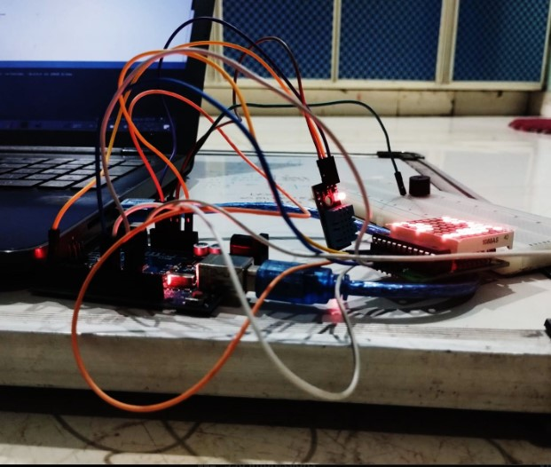
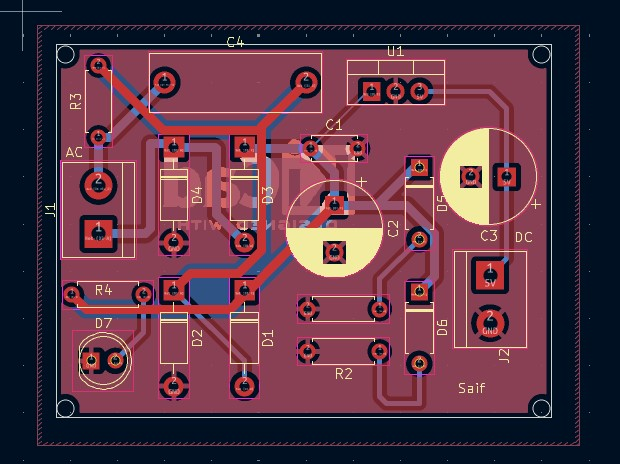

Build, layout and hardware evidence.
The portfolio source material describes DHT11/DHT22 sensing, threshold-based alerts and display integration. The supplied photographs are presented here without replacing them with stock imagery.
Every image supplied for this project is included below. Click an image to inspect it at full size.

